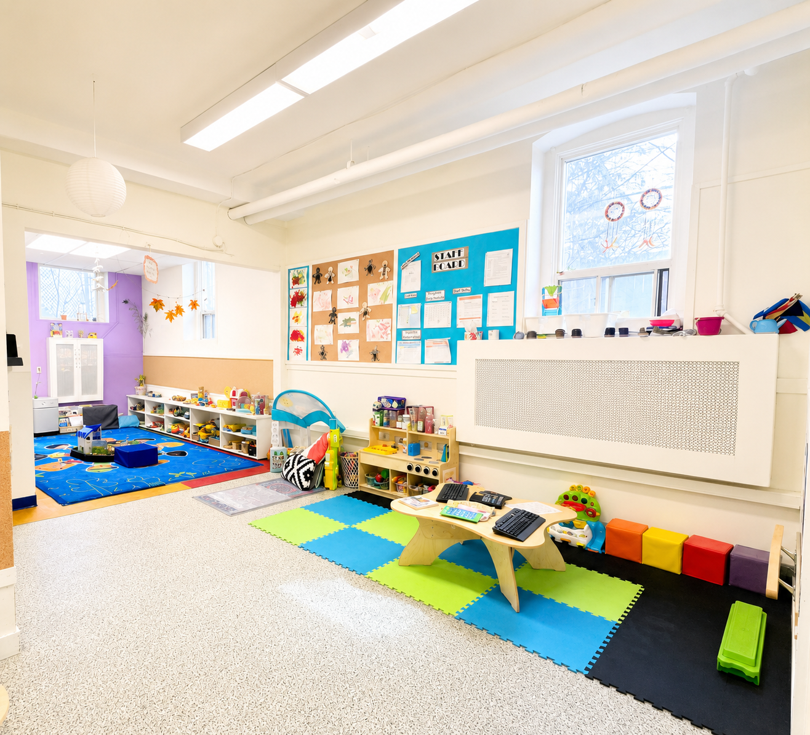

6 Weeks–18 Months
Sweet Peas
A warm and nurturing beginning where infants feel safe, loved, supported and encouraged to explore the world around them.
Welcome to Sweet Peas
Growing through loving relationships
The Sweet Peas Room has 10 spaces for children aged 6 weeks to 18 months. Our caring team of Registered Early Childhood Educators and Early Childhood Assistants provides individualized, nurturing care in a warm and welcoming environment. With a ratio of 1 educator for every 3 children, each infant receives the attention, comfort, and support they need to thrive.
Our program is built around responsive relationships, following each child's unique routines, interests, and developmental milestones. Through gentle interactions, sensory exploration, music, tummy time, outdoor experiences, and loving care, we help lay the foundation for lifelong learning. For many families, the Sweet Pea room is where their Children's Circle journey begins - creating trusting relationships, cherished first memories, and a strong partnership between educators and families during this very special stage of development.
Children may experience:
- Sensory and exploratory play
- Music, songs and movement
- Books, stories and language experiences
- Fine- and gross-motor opportunities
- Outdoor exploration
- Responsive feeding, rest and care routines
Our Approach
Every infant is unique
Daily routines are treated as meaningful opportunities for connection, communication and learning. Educators observe each child carefully and create experiences inspired by their interests and emerging skills.
Interested in the Sweet Peas program?
Contact us to learn more about our infant program, availability and waitlist.
Join Our Waitlist